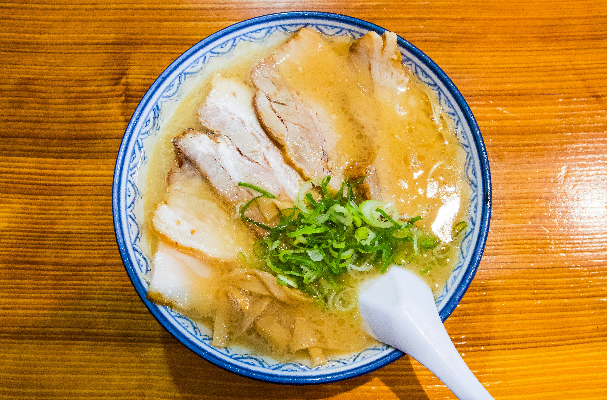

概要 / Overview
豚骨ラーメンは「白濁スープ = 長時間・高温で骨を乳化させた結果」という、料理というより物理実験。
Tonkotsu ramen is defined by its milky-white broth, created by aggressively boiling pork bones until fat, collagen, and water emulsify.
材料 / Ingredients
スープ / Broth
- 豚骨（ゲンコツ＋背骨）2–3kg / Pork bones (leg + spine), 2–3 kg
- 水 6–8L / Water, 6–8 L
- 生姜 50g（潰す）/ Ginger, crushed
- にんにく 1玉（半分に切る）/ Garlic, halved
- 玉ねぎ 1個（半分）/ Onion, halved
- 長ねぎの青い部分 / Green parts of scallions
えし / Tare（味のベース）
- 醤油 200ml / Soy sauce
- みりん 100ml / Mirin
- 酒 100ml / Sake
- 砂糖 小さじ1 / Sugar, 1 tsp
※ 九州系は塩ダレも多い / Kyushu-style often uses salt tare instead.
チャーシュー / Chashu
- 豚バラ肉 500g / Pork belly
- 醤油 100ml / Soy sauce
- 酒 100ml / Sake
- 砂糖 大さじ2 / Sugar, 2 tbsp
- 生姜スライス / sliced ginger
麺・トッピング / Noodles & Toppings
- 細ストレート麺（低加水）/ Thin straight ramen noodles
- 青ねぎ / Green onions
- きくらげ / Wood ear mushrooms
- 煮卵（味玉）/ Seasoned egg
作り方 / Instructions
① 骨の下処理（超重要）/ Bone Prep (Non-negotiable)
- 骨を水でよく洗う / Rinse bones thoroughly
- 強火で30分下茹で / Boil hard for 30 min
- アク・血を全部捨てる / Dump everything
- 骨を流水でこすり洗い / Scrub bones under running water
② 本炊き（白濁地獄）/ Main Boil
- 骨＋水を鍋へ / Add the bones and water to the pot
- 強火で8〜12時間煮続ける / Boil aggressively for 8-12 hours
- 水が減ったら足す / Add water as needed
- 最後2時間で香味野菜投入 / Add aromatics near the end
- 🔥 ポイント / Point
- ゴロゴロ沸かす / Boil vigorously
- 骨が崩れるまで / Until the bones crumble
③ スープ完成 / Finished Broth
- 白く、ドロっとしてたら成功 / If it's white and thick, it's a success
- ザラつきはOK、それがコラーゲン / A little roughness is fine—that's collagen
④ かえし作成 / Make the Tare
- 全部鍋で軽く沸かす / Bring everything to a gentle boil in a pot
- アルコール飛ばす / Evaporate the alcohol
- 冷まして保存 / Cool and store
⑤ チャーシュー / Chashu
- 豚バラを焼いて表面に焼色 / Grill the pork belly and brown the surface
- 調味料＋水で1時間弱火 / Cook on low heat for 1 hour with seasonings and water
- 冷ましてスライス / Cool and slice
⑥ 組み立て / Assembly
- 丼に / In a bowl
- かえし 30–40ml / 30–40ml of sauce
- スープ 300ml / 300ml of soup
- 茹でた麺 / Boiled noodles
- トッピング / Toppings
味わえ。調整せよ。自らを厳しく裁け / Taste. Adjust. Judge yourself harshly.